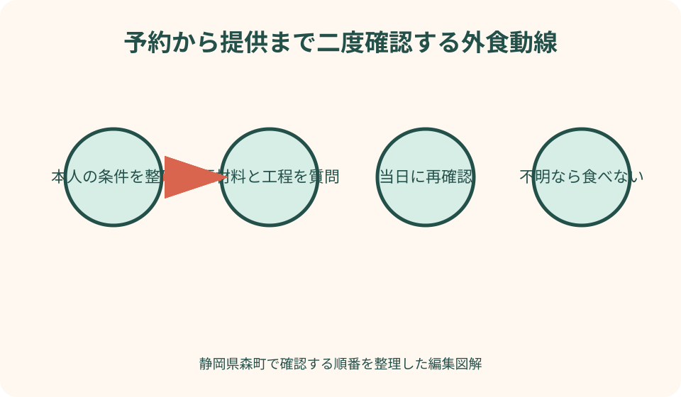
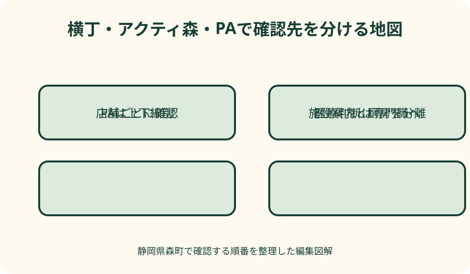

森町グルメ・食事条件｜最終確認 2026-08-10
静岡県森町で食物アレルギーがある人の外食確認｜予約から緊急時まで
森町で食物アレルギーがある人の外食先を探す時、「対応店」の一覧やランキングだけでは安全を判断できません。同じ商品名でも原材料や仕入れが変わり、別料理と油、ゆで湯、トング、作業台を共用する場合があります。必要なのは、本人が医療機関から受けた指示を基準に、予約時と当日に同じ質問を行い、店舗が確認できる範囲とできない範囲を受け止めることです。本記事は医療助言ではなく、森町の公的相談先、観光協会、横丁、アクティ森、PAの公式情報を使い、対応できない時に食べない選択へ戻る確認手順を示します。

編集イラスト対応店ランキングを作らず本人の条件を整理する
最初に、対象食物、医療機関から受けた指示、微量混入をどこまで避ける必要があるかを本人または保護者が整理します。本記事が食べられる量や症状を判定することはできません。
過去に食べられた店でも、原材料、仕入れ、担当者、調理器具は変わる可能性があります。一度の利用経験を「対応店」の永久保証にせず、食事ごとに再確認します。
アレルギー対応という言葉も、特定材料を抜く、表示を見せる、専用器具を使うなど店ごとに意味が違います。言葉だけで安全と判断せず、具体的な工程を聞きます。
家族や幹事は、本人へ何を避けるかを直接確認します。好み、宗教上の食事、苦手、乳糖不耐など異なる条件を一括してアレルギーと呼ばず、必要な質問を分けます。
本記事は店舗を利用して対応を試した体験談ではありません。2026年8月10日に確認した森町と各施設の公式情報を基に、外食前の連絡と代案を整理しています。
予約前に医療上の指示と緊急時行動を確認する
外食で避ける食品、症状が出た時の薬、救急要請の判断は、主治医など医療専門職へ確認します。インターネット記事や店員へ医療判断を求めません。
処方された薬がある場合、使用方法、携帯、期限、保管を医療機関や薬剤師の指示に従って確認します。本記事では薬の使用時点や量を案内しません。
同行者全員が、本人の氏名、対象食物、薬の携帯場所、緊急連絡先を知るようにします。子どもだけが説明できる状態にせず、大人が同じ情報を持ちます。
旅行者は、森町の医療機関、救急案内、現在地を確認できるようにします。救急時の電話番号や利用条件は最新の公的情報を見て、平時の相談窓口と緊急窓口を混同しません。
医療上の条件を整理できていない日は、新しい料理を試す外食を延期します。表示を確認できる普段の食事を持つなど、本人が安心できる方法へ戻ります。
予約時は料理名でなく原材料を層ごとに聞く
店には、主材料だけでなく、衣、つなぎ、出汁、たれ、油、調味料、薬味、トッピング、付け合わせ、デザートを確認します。「卵なし」だけで一食全体を安全としません。
加工品は包装の原材料表示を確認できるか、店内仕込みは担当者へ確認できるかを尋ねます。仕入れ先の詳細まで店が確認できない場合、その不確実さを本人側が受け止めます。
季節料理や日替わりは当日の仕入れで変わります。予約時の料理名が同じでも材料変更がないか、来店日に再確認する前提を店へ伝えます。
外せるトッピングと、調理済みで除けない材料を分けて聞きます。盛付け後に見える材料だけを抜く方法で安全になるとは判断しません。
質問が多い場合は混雑時間の電話を避け、店が確認できる時間を尋ねます。回答を急がせず、折返しや書面表示が難しい場合は別の店へ変えます。
調理器具と交差接触を工程で確認する
交差接触とは何を意味するかを店と具体化します。同じ油、ゆで湯、網、鉄板、包丁、まな板、トング、ボウル、ふきん、手袋、作業台を使うかを尋ねます。
専用器具があっても、保管場所、洗浄、調理する順、盛付けで他料理と接触する可能性があります。専用という言葉だけで完全分離と判断しません。
そば店ではゆで湯や粉、ラーメン店では麺とスープ、菓子店では製造設備、揚げ物店では油の共用が確認点になります。一般論ではなく利用する店の工程を聞きます。
セルフサービスのトング、調味料、給水機、ビュッフェでは利用者による混入も考えます。専用の提供ができるかを尋ね、難しければ共有場所を使いません。
店舗が交差接触を防げないと説明した場合、それは重要な回答です。対応を強く迫らず、表示を確認できる密封品、持参食、外食をしない方法へ切り替えます。
当日は担当者へ同じ内容を再確認する
来店時に、予約名、対象食物、事前に話した内容を伝えます。電話担当と調理担当が同じとは限らないため、「予約で伝えたから大丈夫」と省略しません。
料理を注文する前に、当日の材料変更、売切れによる代替、調理器具の運用を確認します。予約料理が提供できず別料理になる場合は最初から質問し直します。
提供時には、対応品が誰の料理か店員と本人で確認します。目印、別の皿、名前など店が可能な識別を相談し、家族の皿と並べ替えません。
疑問が残る場合、忙しそうだからと食べ始めません。責任者へ確認できるか尋ね、確認不能なら料理を下げてもらう相談をします。料金や廃棄の扱いは店と落ち着いて話します。
食後も、新しい症状や違和感の医療判断を店へ求めません。事前に医療機関と確認した行動に従い、緊急性があれば公的な救急連絡を使います。

持参食は許可・保管・加熱・ごみを確認する
安全な持参食が必要でも、飲食店へ自由に持ち込めるとは限りません。予約時に理由、人数、容器、食べる場所を伝え、店舗の衛生と営業上のルールを確認します。
冷蔵保管、電子レンジ、湯、食器を店が提供できると仮定しません。家庭で安全に準備し、必要な温度を保てない場合は短時間の外出または食事なしへ変えます。
店の皿へ移す、店の箸やトングを使うことで接触が起きる場合があります。自分の容器と器具を使えるかを相談し、テーブル上でも他料理と離します。
持参食のごみを店へ捨てられるとは限りません。密閉袋を用意し、家族の残り物と混ぜず持ち帰ります。容器を洗う設備も求めません。
本人だけ持参食にする場合、周囲が交換や味見を勧めないよう事前に共有します。子どもが孤立しない席と会話を家族が考え、店へ特別な演出を求めません。
ことまち横丁は店舗ごとに質問をやり直す
ことまち横丁公式には、茶、甘味、カフェ、米菓など複数の店舗が掲載されています。横丁全体で一つの厨房や原材料管理を共有しているとは限らず、買う店ごとに確認します。
同じ休憩席で複数店舗の商品を広げると、容器、手、テーブルを通じた接触が増えます。本人の品を先に確定し、家族が別商品を交換しないよう配置します。
茶そのものに対象食物がなくても、菓子、香味、添え物、製造設備を確認します。商品名や見た目から乳、卵、小麦、そば、ナッツを判断しません。
詰め放題や対面実演では、器具、袋、作業台の共用を尋ねます。人が多い時に店員へ長い質問を急がせず、事前問い合わせまたは密封品を検討します。
確認できる商品がない場合、横丁で食べる必要はありません。小國神社参拝だけを行い、食事は持参品または帰宅後へ分けます。
アクティ森は施設情報とレストラン確認を分ける
アクティ森は2026年にリニューアル案内があり、古い町ページのレストラン情報を現行保証にできません。施設公式で営業中の飲食、予約、問い合わせ先を確認します。
体験と食事を同日にする場合、体験材料にも対象物がないか尋ねます。草木染めや料理体験など名称だけで安全を判断せず、本人が触れる物と洗浄設備を確認します。
レストランへは、原材料、共用器具、団体メニュー、持参食を事前に質問します。施設予約と飲食予約が同じ窓口とは限りません。
特産品販売所の密封品は、包装表示、製造者、注意書きを商品ごとに読みます。森町産や手作りという言葉はアレルゲンが少ない意味ではありません。
対応できない時は、体験だけ利用し、食事は安全に確認できる別の時間・場所へ分けます。山間部で次の店を探し回らず、帰路を先に決めます。
遠州森町PAは上下線・店舗・注文口を分ける
NEXCO中日本の公式ページで、遠州森町PAの上り・下り、店舗、営業時間を確認します。上下線で店が違うため、反対方向のメニューや設備情報を使いません。
フードコートでは複数商品の厨房、券売機、受取口、調味料が近い場合があります。店舗ごとに原材料と器具を尋ね、セルフサービス品を使わない判断も持ちます。
PAの公式ページにベビー設備やバリアフリー情報があっても、アレルギー対応を保証するものではありません。施設設備と飲食の確認先を分けます。
高速道路走行中は、食事のために危険な転回や逆方向への移動をしません。対応できない場合、次のSA・PAまたは高速を適法に出た後の確認済み店へ移ります。
一般道からぷらっとパークを使う場合、開閉と駐車を確認します。対応確認に時間がかかり閉門が迫るなら利用せず、別の安全な食事へ変えます。
対応不可時の代案を食べない順で用意する
第一の代案は、対象料理を別料理へ置換することではなく、その店で食べないことです。別料理も同じ厨房を使うため、質問を最初からやり直す必要があります。
次に、包装表示を確認できる普段の密封品、許可を得た持参食、帰宅後の食事を検討します。空腹を理由に初めての商品を急いで選びません。
家族全員が店を変えるか、本人だけ食べないかは、本人の気持ちと安全を尊重して事前に決めます。子どもへ我慢を当然とせず、外食自体を別日にできます。
旅行中は、対応不可を知ってから町内を何店も巡回しません。電話で確認できる第二候補一つ、持参食、帰宅の順を出発前に共有します。
体調不良や疑わしい接触があった後に、別の店で食べ直しません。本人の医療上の行動を優先し、必要なら公的救急案内へ連絡します。
森町の公的相談先は医療機関への橋渡しとして使う
森町の健康相談案内は、保健師・栄養士が電話や窓口で健康相談に応じると掲載しています。利用対象、相談日時、対応範囲を確認し、診断や緊急治療の代わりにはしません。
乳幼児については、こども健康相談で離乳食・食事の相談が可能と町が案内しています。予約、対象年齢、日程を最新ページで確認し、個別の外食可否は医療機関へ相談します。
森町保健福祉センターには健康こども課などがあると町公式に掲載されています。窓口へ行けば即時に専門診療を受けられるとは考えず、事前に電話で相談先を確認します。
緊急時は、平日の健康相談へ連絡するのではなく、公的な救急窓口と事前に医療機関から指示された行動に従います。この記事は緊急性を判定しません。
町外の来訪者も、普段の主治医や居住地の相談先へ旅行前に確認します。森町の相談窓口が個人の医療履歴を把握しているとは限りません。

良い点：公式入口を使って店舗へ具体的に質問できる
森町観光協会には飲食店の所在地や連絡先があり、候補探しの入口として使えます。対応を保証する一覧ではないため、本人の質問を持って店舗へ進める点に価値があります。
横丁、アクティ森、PAには運営者の公式情報があり、営業、店舗、施設を確認できます。場所全体の印象で判断せず、実際に料理を扱う窓口を特定できます。
森町には大人の健康相談、子どもの健康・食事相談、保健福祉センターの公的情報があります。医療助言へ置き換えず、どこへ相談すべきか確認する橋渡しに使えます。
持参食、密封品、食事を別日にするなど、店の特別対応だけに依存しない選択があります。店舗が難しいと答えた時も、家族の予定を安全に変更できます。
質問項目を家族で共有すれば、本人だけに説明負担を集中させません。予約、当日確認、緊急連絡を大人や幹事が分担できます。
注文したい点：対応の範囲と確認不能を明示したい
飲食店案内に、原材料表示の有無、事前相談、持参食、共用油・器具について問い合わせ先があると便利です。「対応可」だけでなく、確認できない範囲も示すことが重要です。
店舗のメニュー変更時には、古いアレルゲン表を残さず更新日を付けたいところです。仕入れ変更がある料理は当日再確認が必要と明記できます。
複合施設では、施設受付、各飲食店、物販の問い合わせを分け、横丁全体やPA全体が一律対応するように見せない案内が望まれます。
子ども向け案内には、持参食の可否、席、緊急時の所在地説明をまとめると保護者が準備しやすくなります。医療判断は主治医へ戻す注記も必要です。
公的相談ページには、一般相談、子どもの食事相談、夜間・緊急の窓口の違いを分かりやすく示し、開庁時間外に通常窓口へ依存しない導線が役立ちます。
代案・結論：確認できない時は食べないを選ぶ
外食前に、医療機関の指示、対象食物、交差接触の条件、薬、緊急連絡を確認します。店へは原材料、工程、共用器具、持参食、識別方法を予約時に質問します。
来店日は同じ質問を担当者へ再確認し、材料変更と提供品の印を見ます。予約時の回答だけで食べ始めず、本人が納得できる情報がそろうまで待ちます。
店が対応できない、確認担当が不在、表示がない場合は注文しません。密封品、許可済みの持参食、帰宅後の食事へ変えます。
食後に症状が疑われる場合、この記事や口コミで判断せず、事前に医療機関から受けた行動と公的な救急案内に従います。店舗との話は安全確保の後にします。
結論は、対応店を探し当てることではなく、不確実さが残る時に食べない判断を家族全員が尊重することです。外食を見送っても旅行や参拝は別に楽しめます。
大石の視点：家族の確認票は店名より条件を残す
私（大石）は、家族の食事記録に「この店は大丈夫」と書きません。確認日、料理、原材料、共用器具、担当者へ聞いた範囲、未確認事項を残します。
次回はその記録を見せて同じ回答を求めるのではなく、材料と工程が変わっていないか質問します。価格や営業時間と同じく、対応も更新される前提です。
三世代の会食では、本人、予約担当、当日確認担当、薬を持つ人を決めます。一人の保護者だけが説明しながら他の子どもも見る状態を避けます。
実家で食事をする代案でも、古い調味料、調理器具、まな板、粉の残留を確認します。外食をやめれば自動的に安全になるとは考えず、家庭の工程も整理します。
この記事の情報確認日は2026年8月10日です。店舗、原材料、設備、公的相談は変更される場合があります。外食の可否や緊急時の医療判断は、主治医など専門職と最新の公的案内へ確認してください。
公式情報・確認先
掲載内容は次の一次情報を基礎に整理しました。営業、料金、催し、交通は変わるため、出発前または手続き前にリンク先で最新情報を確認してください。
- 暮らしの相談窓口・健康相談（静岡県森町、2026-08-10確認）
- 乳幼児の健診・相談（静岡県森町、2026-08-10確認）
- 森町保健福祉センター（静岡県森町、2026-08-10確認）
- 観光（静岡県森町、2026-08-10確認）
- 森町観光協会 観光案内（森町観光協会、2026-08-10確認）
- 小國ことまち横丁（小國ことまち横丁、2026-08-10確認）
- 森町体験の里アクティ森リニューアルオープンについて（静岡県森町、2026-08-10確認）
- 遠州森町PA 上り 施設・サービス案内（NEXCO中日本、2026-08-10確認）
- 遠州森町PA 下り 施設・サービス案内（NEXCO中日本、2026-08-10確認）